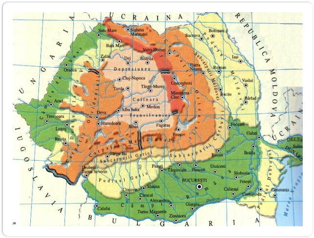
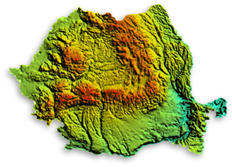
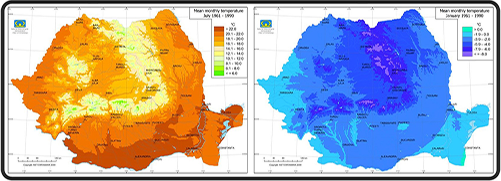
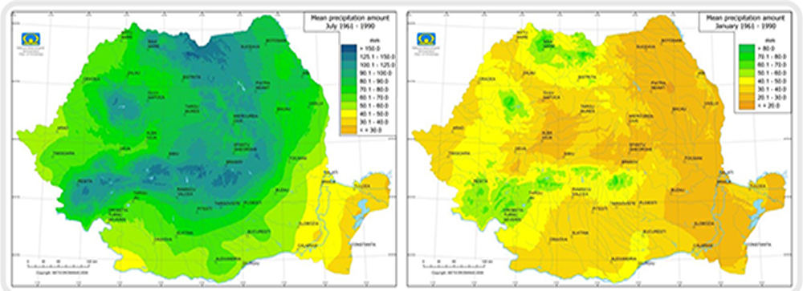
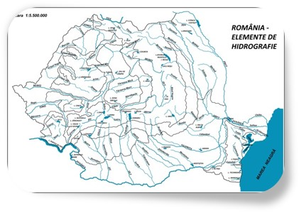
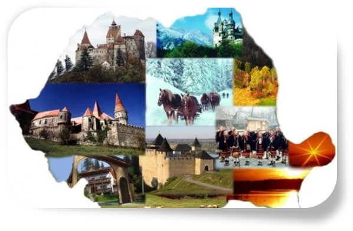
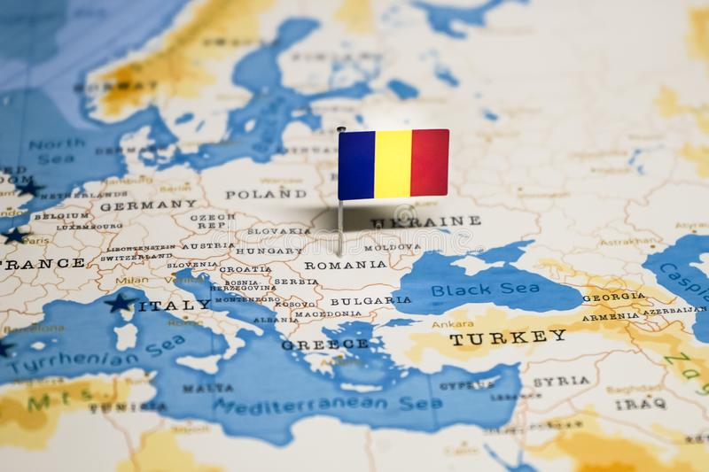

România este un stat situat în sud-estul Europei Centrale, pe cursul inferior al Dunării, la nord de peninsula Balcanică și la țărmul nord-vestic al Mării Negre. Pe teritoriul ei este situată aproape toată suprafața Deltei Dunării și partea sudică și centrală a Munților Carpați. Se învecinează cu Bulgaria la sud, Serbia la sud-vest, Ungaria la nord-vest, Ucraina la nord și est și Republica Moldova la est, iar țărmul Mării Negre se găsește la sud-est.

Imnul României
„Deșteaptă-te, române!” este imnul național al României, începând cu 1990. Pentru o vreme, a fost de asemenea imn național al Republicii Democratice Moldovenești (1917 - 1918) și al Republicii Moldova (1991 - 1994).
Poezia Răsunet a fost publicată în numărul 25 din 21 iunie 1848 al revistei „Foaie pentru minte, inimă și literatură” avându-l ca autor pe Andrei Mureșanu. Se presupune că este un ecou, un răspuns, o replică la poezia către români a lui Vasile Alecsandri, publicată în numărul 21 din 24 mai 1848 al aceleiași reviste.
Drapelul României
Drapelul Tricolor Românesc, alături de stemă şi imnul naţional reprezintă un însemn important al neamului nostru.
Tricolorul românesc a străbătut până în momentul afirmării sale ca simbol vexilogic naţional, mai multe perioade, prima fiind cea a opţiunii pentru cele trei culori: albastru, galben şi roşu. Semnificaţia celor trei culori este următoarea: - ALBASTRU reprezintă aerul, cel mai nobil element şi simbolizează blândeţea, frumuseţea şi buna credinţă, amintind şi legea strămoşească creştină - GALBEN este simbolul forţei, al bogăţiei şi al purităţii. Ea reprezintă şi culoarea holdelor de grâu copt. - ROŞU reprezintă simbolul măririi, al bucuriei, îndrăznelii şi generozităţii. Simbolizează de asemenea, sângele vărsat în lupte, puterea de viaţă şi energie strămoşească.
Aceste culori se regăsesc pe diplomele emise de Mihai Viteazul, pe scuturi și pe lambrechinii stemelor. Este de remarcat prezența celor trei culori în canafii și în picturile de pe pânza drapelului răscoalei lui Tudor Vladimirescu în cadrul căreia li se atribuie pentru prima oară semnificația: Libertate (albastrul cerului), Dreptate (galbenul ogoarelor), Frăție (roșul sângelui).
Tricolorul a fost adoptat întâi în Țara Românească, în 1834, când domnitorul reformator Alexandru D. Ghica a supus aprobării sultanului Mahmud al II-lea modelele pavilioanelor navale și a drapelelor de luptă. Drapelele de luptă aveau culorile roșu, albastru și galben, având și stele și pasărea cu cap în mijloc. Curând, ordinea culorilor a fost schimbată, astfel încât galbenul să apară în centru.
Stema României
Simbolurile heraldice statale fac parte din identitatea naţională. Stema actuală a fost elaborată după Revoluţia din Decembrie1989. Elementele constitutive ale stemei naţionale a României cuprind:
- Vulturul de aur cruciat- element central care simbolizează dinastia întemeietoare a Basarabilor, nucleul în jurul căruia a fost organizată Ţara Românească, una dintre cele trei provincii din Evul Mediu (Ţara Românească, Moldova şi Transilvania)
- Scutul pe care stă este de azur- simbolizează cerul. Vulturul ţine în gheare însemnele suveranităţii: un sceptru şi o sabie, care reamintesc de domnitorul Moldovei, Ştefan cel Mare şi Sfânt şi de domnitorul Tării Româneşti, Mihai Viteazul, primul unificator al celor trei Ţări Române.
- Ţara Românească pe azur: un vultur ţinând în cioc o cruce ortodoxă de aur
- Moldova: un bour negru cu o stea între coarne.
- Banatul şi Oltenia, un pod galben cu două arce de boltă (simbolizând podul peste Dunăre al împăratului roman Traian) şi un leu de aur.
- Transilvania: deasupra se află un vultur negru cu gheare de aur; dedesubt se găsesc şapte turnuri crenelate simbolizând cele şapte oraşe principale ale Transilvaniei.
- Teritoriile adiacente Mării Negre (provincia istorică Dobrogea) sunt reprezentate de doi delfini afrontaţi.
Relieful României
Relieful României se caracterizează printr-o mare diversitate și complexitate. Din întreaga suprafață a României, 28% este ocupată de munți (peste 800 m altitudine), 42% de dealuri și podișuri (200–800 m altitudine) și 30% de câmpii (sub 200 m altitudine).
Relieful este axat pe arcul Carpaților. În centrul teritoriului se află Podișul Transilvaniei, înconjurat de lanțurile muntoase ale Carpaților Orientali, Meridionali și Occidentali, la exteriorul cărora se întind, ca o treaptă mai joasă, podișuri și câmpii, către care trecerea se face prin intermediul dealurilor subcarpatice.
Carpații românești se împart în trei mari grupe:
- Carpații Orientali, aflați între granița de nord și Valea Prahovei, reprezintă 52,2 % din întreaga arie carpatică, cuprinzând depresiuni largi și numeroase pasuri ce permit circulația rutieră și feroviară între Moldova și Transilvania; pe latura vestică a Carpaților Orientali se întinde cel mai mare lanț de munți vulcanici din Europa: Oaș, Gutâi, Țibleș, Călimani, Gurghiu, Harghita, Bodoc etc. Formați ca și celelalte unități ale Carpaților românești, în timpul orogenezei alpine, prezintă varietate litologică, fiind constituiți din sișturi cristaline, roci sedimentare și roci vulcanice, dispuse în trei șiruri paralele. Altitudinea maximă este de 2303 m, iar gradul de fragmentare este ridicat, fiind dat de prezența depresiunilor și văilor dispuse transversal și longitudinal. Între văile Oituz și Prahova, Carpații Orientali își schimbă direcția (de la N-V la S, spre S-V și V), formând Carpații de Curbură. Masivele care alcătuiesc Carpații Orientali au următoarea alcătuire: în vest roci vulcanice, în centru roci cristaline iar în est și sud roci sedimentare. Principalele resurse sunt: minereuri de cupru, plumb, aur, argint, mangan, cărbuni, ape minerale etc.
- Carpații Meridionali, cuprinși între Valea Prahovei și culoarul Timiș-Cerna, se întind pe aproximativ 21 % din spațiul montan românesc. În această grupă se întâlnesc cei mai înalți munți din România, 11 vârfuri au altitudini de peste 2500 m. Caracteristicile morfometrice sunt superioare celorlalte unități carpatice. Dovada o constituie înălțimea maximă de 2544 m, înclinarea medie a reliefului de 25 – 35 % și adâncimea fragmentării, care, pe alocuri, variază între 500 și 1000 m. Masivitatea pronunțată se explică prin structura litologică, prin predominarea sișturilor cristaline. În plus, aceste tipuri de roci au conservat cel mai bine urmele glaciațiunii pleistocene și, ca urmare, Carpații Meridionali adapostesc cea mai mare varietate de forme glaciare: circuri și văi glaciare, custuri, șei de transfluență, morene frontale și laterale, praguri glaciare. Acestea sunt fie izolate, fie grupate, în acest din urmă caz formând complexe glaciare. De asemenea, rocile metamorfice sunt cele care au condiționat menținerea urmelor modelarii policiclice, în cadrul lor evidențiindu-se trei suprafețe de nivelare (Borăscu, Râu-Șes, Gornovița), precum și umeri de vale. Nu în ultimul rând, este de menționat relieful carstic prezent pe calcarele din care sunt construite extremitățile munților. Munții sunt formați din roci cristaline și culmi calcaroase.
- Carpații Occidentali, ce se întind între Defileul Dunării la Sud, și Someș la Nord, au trecut, pe parcursul orogenezei alpine, prin etape de înălțare și de coborare, prin accidente tectonice pe parcursul cărora s-au definitivat masivele sub formă de horsturi si grabene. Liniile de falii formate au permis apariția efuziunilor vulcanice și conturarea unor forme vulcanice care s-au păstrat până azi. Ponderea mare a rocilor dure (sișturi cristaline, granite, banatite) explică masivitatea reliefului. Prezența calcarelor a favorizat dezvoltarea reliefului carstic pe o suprafata de 2467 km², acesta fiind marcat prin peșteri și forme carstice minore. Și în cadrul lor, procesele tectonice sacadate, cu faze de înălțare urmate de lungi perioade de liniște tectonică, au contribuit la formarea suprafețelor de nivelare, însă la înălțimi mult mai reduse în comparație cu celelalte ramuri carpatice. Altitudinea maximă este de 1849 m în Munții Apuseni. Principalele resurse sunt: minereuri feroase și neferoase, cărbuni, materiale de construcții, izvoare minerale etc.

Clima României
Clima României este temperat-continentală de tranziţie, marcată de unele influenţe climatice oceanice, continentale, scandinavo-baltice, submediteraneene şi pontice. Astfel, în Banat şi Oltenia se face simţită nuanţa mediteraneană, caracterizată de ierni blânde şi regim pluviometric mai bogat (mai ales toamna). În Dobrogea se manifestă nuanţa pontică, cu ploi rare, dar torenţiale.
În regiuni din estul ţǎrii, caracterul continental este mai pronunţat. În partea de nord a ţării (Maramureş şi Bucovina) se manifestă efectele nuanţei scandinavo-baltice, care determină un climat mai umed şi mai rece, cu ierni geroase. În vestul ţării se manifestă mai pronunţat influenţe ale sistemelor de joasă presiune, generate deasupra Atlanticului, ceea ce determina temperaturi mai moderate şi precipitaţii mai bogate.
Nuantarile climatice se manifesta si pe treptele altitudinale, în masivele muntoase ale arcului carpatic fiind prezent climatul montan răcoros, cu umezeală mare în tot timpul anului.


Hidrografia României
România beneficiază de toate tipurile de unități acvatice: fluvii și râuri, lacuri, ape subterane, ape marine.
Apele curgătoare izvorăsc, în cea mai mare parte, din coroana centrală a Carpaților și sunt colectate, aproape în totalitate, de Dunăre.
Lacurile se întâlnesc pe toate treptele de relief și au forme, mărimi și origini foarte variate. Deși în numar mare (3500) sunt, în general, reduse ca suprafață (1,1% din teritoriul țării). Cele mai mari sunt cele din sistemul lagunar Razim, sau unele limane maritime (Tașaul, Siutghiol, Techirghiol), ori fluviale (Lacul Oltina în sudul Dobrogei, Snagov la nord de București).
Cele mai importante râuri din România sunt:
- Dunărea: Al doilea fluviu din Europa ca dimensiuni și debit (după Volga), având 2860 de km lungime, dintre care 1 075 km se află în România. Izvorăște din munții Pădurea Neagră, prin râurile Breg și Brigach, suprafața bazinului hidrografic fiind de 805 300 km². Sectorul inferior, de la Baziaș la vărsare, are 1 075 km, dintre care 144 km sunt parcurși printr-un defileu, cu o porțiune numită „Cazane”. Dunărea este un important drum fluvial internațional, curgând prin 10 țări (Germania, Austria, Slovacia, Ungaria, Croația, Serbia, Bulgaria, România, Republica Moldova și Ucraina) și are afluenți în alte 7 țări. Trece prin 4 capitale de stat: Viena, Bratislava, Budapesta și Belgrad.
- Mureș: Afluent al Tisei. Mureșul este al II-lea râu ca lungime din România, după Dunăre. Are 803 km, din care 761 km se află pe teritoriul României. Izvorăște din Munții Hășmaș (Carpații Orientali), trece prin depresiunea Giurgeu, traversează Munții Căliman și Gurghiu (prin defileul Toplița-Deda, lung de 50 de km), străbate partea centrală a Podișului Transilvaniei (trecând prin orașele, Reghin, Târgu-Mureș, Iernut, Aiud), intră în Câmpia Aradului, trece prin municipiul Arad și, la vest de orașul Nădlac, definește granița între România și Ungaria pe 31 de km, după care intră în Ungaria și se varsă în Tisa. În Antichitate era numit „Maris” sau „Marisia”.
- Olt: Este un afluent al Dunării, având o lungime de 615 km. Izvorăște din Munții Hășmaș și traversează partea de sud-est a Transilvaniei. Apoi traversează Carpații Meridionali prin defileul Turnu Roșu și traversează Câmpia Română, formând limita între Muntenia și Oltenia. În vecinătatea Oltului sunt așezate orașele (municipiile) Miercurea Ciuc, Sfântu-Gheorghe, Făgăraș, Râmnicu Vâlcea și Slatina. Tronsonul de la Făgăraș la Dunăre a fost amenajat printr-un lanț de centrale hidroelectrice.
- Prut: Lung de 953 km si cu un debit de 450 m3/sec., izvorăște din Carpații Păduroși ai Ucrainei, de unde curge spre est, mare parte din curs fiind apoi pe direcția sud-est. Se varsă în Dunăre lângă Reni, la est de orașul Galați. Formează granița între România și Republica Moldova. În perioada interbelică râul era navigabil până la Ungheni, însă în perioada comunistă navigația pe râu a fost treptat abandonată, șenalul nemaifiind întreținut decât pe partea Republicii Moldova pana la Leova. . Principalul afluent pe partea dreaptă este Jijia cu afluenții Bahlui și Bașeu. Pe Prut există amenajări hidroenergetice (la Stânca-Costești) realizate împreună cu URSS.
- Siret: Izvorăște în Carpații de nord, pe teritoriul Ucrainei de azi, în Bucovina de Nord. Parcurge 706 km și se varsă în Dunăre, lângă Galați. Dintre afluenții Dunării pe teritoriul Romaniei, are cel mai mare bazin hidrografic din țară, fiind râul intern cu al doilea cel mai mare debit de pe teritoriul Romaniei (un debit mediu multianual de peste 225 mc/s la vărsare). Principalii afluenți ai Siretului sunt: pe partea dreaptă Suceava, Moldova, Bistrița, Trotuș, Putna și Buzău, iar pe partea stângă, Bârlad. Pe cursul său, au fost realizate în perioada comunistă mai multe baraje și lacuri de acumulare, reducând, nu eliminând, pericolul de inundații (cele mai recente au fost în anul 2005). Principalele orașe de pe sau din apropierea cursului său sunt: Siret, Pașcani, Roman, Bacău, Adjud și Galați.
Alte râuri importante sunt: Someș, Crișurile (Crișul Alb, Crișul Negru și Crișul Repede), Timișul, Jiul, Argeș și Ialomița.
Cu toată densitatea mare a rețelei hidrografice, din punctul de vedere al resurselor generate pe teritoriul propriu (fără aportul adus din alte țări de Dunăre și alte râuri mai mici) România este una din țările cele mai sărace în resurse de apă pe kilometru pătrat din Europa.

Economia României
Economia României este o economie de piață, conform Constituției din 1991. Conform acesteia, statul este obligat să asigure libertatea comerțului și protecția concureței loiale. În economia României acționează așadar legea cererii și a ofertei. La baza acesteia se află proprietatea privată care trebuie protejată și garantată.
Principalele industrii ale României sunt cea textilă și de încălțăminte, industria metalurgică, de mașini ușoare și de asamblare de mașini, minieră, de prelucrare a lemnului, a materialelor de construcții, chimică, alimentară și cea de rafinare a petrolului. O importanță mai scăzută reprezintă industriile farmaceutică, a mașinilor grele și a aparatelor electrocasnice. În prezent, industria constructoare de mașini ( Dacia Logan) este foarte largă și este orientată înspre piață. Industria românească de IT cunoaște o creștere anuală constantă.
Puterea economică a României este concentrată în primul rând pe producerea de bunuri de către întreprinderile mici și mijlocii în industrii precum cea a mașinilor de precizie, vehiculelor cu motor, industria chimică, farmaceutică, a aparatelor electrocasnice și a îmbrăcămintei.
În 2006 România a reușit să egaleze (la paritatea dolarului) PIB pe locuitor realizat în 1988. Față de media europeană a produsului intern brut pe locuitor în 2007, de 26.208 de dolari americani și de cea mondială, de 8191 de dolari, România avea un nivel de 7523 de dolari, aproape de 3,5 ori mai scăzut decât cel european și se afla sub nivelul mediu mondial.
Turismul în România
Turismul în România se concentrează asupra peisajelor naturale și a istoriei sale bogate. Traversată de apele Dunării, România are un scenariu sensibil, incluzând frumoșii și împăduriții Munți Carpați, Coasta Mării Negre și Delta Dunării, care este cea mai mare deltă europeană atât de bine păstrată. Cu rolul de a puncta peisajele naturale sunt satele, unde oamenii de acolo trăiesc și mențin pentru sute de ani tradițiile. În România este o abundență a arhitecturii religioase și a orașelor medievale și a castelelor, ce accentuează și valorifică potențialul turistic al României.

Cele mai populare obiective turistice din România sunt:
• Viscri, județul Brașov
• Cascada Cailor, Munții Rodnei
• Memorialul Victimelor Comunismului și al Rezistenţei, Sighetul Marmației
• Delta Dunării
• Lacul Sfanta Ana și Tinovul Mohoș, județul Harghita
• Mănăstirea Voroneț, Gura Humorului, județul Suceava
• Sighișoara, județul Mureș
• Transfăgărășan
• Cascada Bigăr, județul Caraș-Severin
• Sibiu
• Complexul Harmonie, Predeal, județul Brașov
• Cimitirul Vesel de la Săpânța, județul Maramureș
• Roșia Montană, județul Alba
• Salina Turda, județul Cluj
• Cetatea Alba Iulia Carolina
• Cazanele Dunării – Dubova, județul Mehedinți
• Castelul Peleș, județul Prahova
• Calea Victoriei, București
• Mocănița de pe Valea Vaserului, județul Maramureș
• Podul lui Dumnezeu, județul Mehedinți
